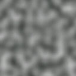

As final project for class CS-341, Introduction to Computer Graphics, Leandro Kieliger, Isaac Leimgruber and myself created a 3D world which is automatically generated using a technique called procedural terrain generation. The class focused on the theoretical basis of rendering techniques while leaving to the students the task of learning how to actually implement those techniques in C++ and OpenGL. The terrain's height To generate the map, we first generate the height of the terrain (mountains, lakes). This is done by using an algorithm to generate a pseudo-random noise texture, named Perlin noise. A 2D view of this noise looks as follows:  By mapping the pure white to an altitude of -100 meters and pure black to +3000 meters, we generate the height of the terrain. The resulting information is called a height-map. To have a more interesting height-map, we post-process the Perlin noise several times. For instance, the ridged variation is used to create more ridged mountains. This noise looks as follows: This terrain is then rendered using OpenGL primitives. Without light and textures, it looks as follows (the boat on the picture is not generated using Perlin noise): The textures The nature of the terrain (grass, ground, rock, water) is then chosen randomly based on the height, surface gradient and another set of pseudo-random textures based on Perlin noise. For instance, we decided that grass grows at lower heights when the terrain's slope is flat enough. Infinite terrain The terrain is generated indefinitely when the camera traverses the landscape. Mountains far away are faded to hide the regeneration process while at the same time giving the illusion of distance. Improved visual appearance For better visual effects, we also implemented these features: Dynamic shadows Adaptive level of details through the use of tessellation Instantiated patches of grass 3D model loading Dynamic sky which mimics the natural colour changes throughout the day Reflections on the water surface vary over time depending on the waves and ripples. Tessellation allows adjusting the level of detail of the terrain based on the distance to the observer and the importance of a given zone. This dramatically improves performance. Note how little geometry is used for the underwater part on the wireframe picture: The final touch was the inclusion of non-random textures for the grass and a 3D-boat designed by hand. Code The project was coded in C++. The code is available on GitHub.
Other articles you might like: How to switch the primary display easily on Windows Using multiple WSL distributions as a dev environment An information theory perspective on probability